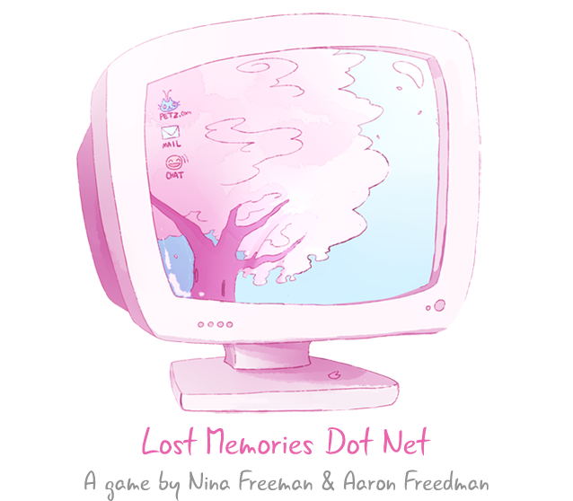
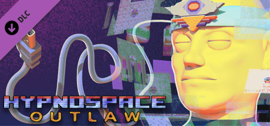

Lost Memories Dot Net
By Nina Freeman
Lost Memories is a game created by Nina Freeman in 2017. About the meeting of a young 14-year-old teenager living in youth trials on the net. The player interacts with the girl's best friend through numerous online discussions. Dialogue is a central part of the game and aesthetics reminds the Internet of the early 2000s. I really enjoyed playing the game.
Hypnospace Outlaw
No More Robots
This game is set in the late 90S, early 2000s and installed in a Geocity-like online hub called ''Hypnospace'. The player has to surf the net and work as a community leader to write a code of conduct on their user pages. The goal of the game is to eliminate copyright writers, hackers and trolls. The player also has the opportunity to customize their in-game desktop however they like, with a variety of thing provided by the game.
Last Week we learned a lot about Javascript. I will use it in my final website